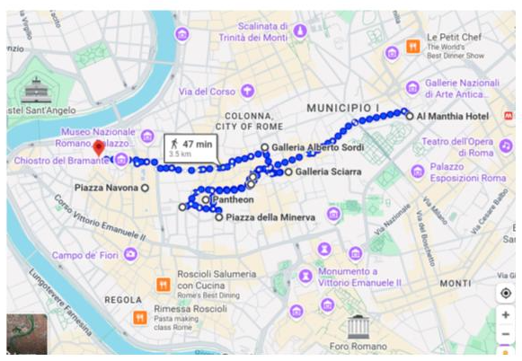
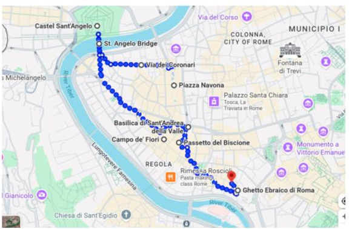
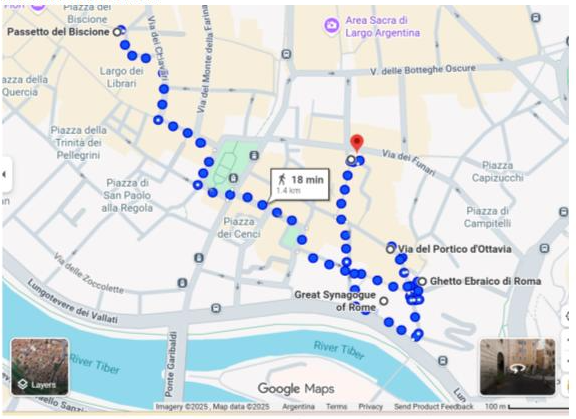

Hotel: Pantheon (Piazza della Rotonda)
En el Pantheon ver:
- Sant’Eustachio @santeustachioilcaffe con su receta secreta del capuccino y sus máquinas tapadas que no permiten develar el misterio, aseguran tener el mejor café del mundo. Digno de probar y repetir en cada visita.
- Piazza della Minerva: antesala de una de las iglesias más interesantes de Roma. En su centro, el histórico Elefantino de Bernini, Pulcino della Minerva.
- La Iglesia Santa Maria Sopra Minerva, única de estilo gótico de Roma.
- Piazza di Sant’Ignazio (ver la Iglesia Sant’Ignazio de Loyola) hasta Vía de’ Burrò pasando por Piazza di Pietra junto al Templo di Adriano.
- Galería Sciarra; patio libre que une via Minghetti con Piazzetta dell’Oratorio.
- Galería Alberto Sordi hasta Piazza Navona.

- Via dei Coronari hasta Ponte Sant’Angelo y Castell Sant’Angelo.
- Caminar hasta Campo Dei Fiori y luego a la Basilica St Andrea de la Valle.
- Para llegar al Ghetto, el mejor camino es el secreto del barrio: el Passetto del Biscione.

- El recorrido del día termina en el Ghetto Judío; Vía del Portico d’Ottavia.
- Visitar la Sinagoga de Roma y su museo.
- En el ghetto judío: Caminar por via San Ambrogio y llegar a la Piazza Mattei, con Fontana delle Tartarughe (1500, Giacomo della Porta, 4 niños de bronce y tortugas añadidas, se cree que por Bernini).